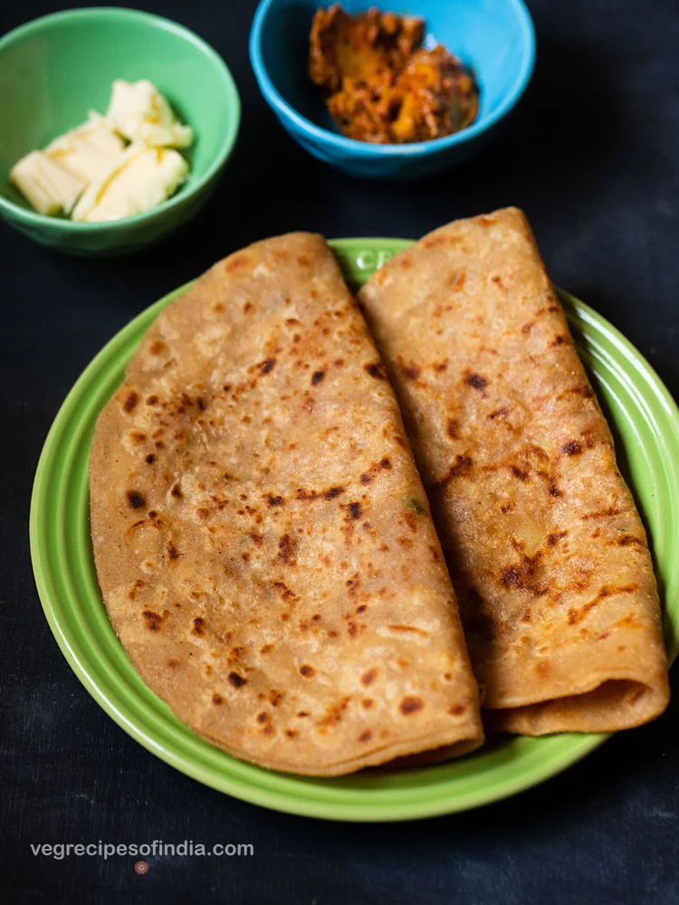

Aloo Parantha(Stuffed Indian Bread)

Description
Ingredients
- 3 to 4 medium potatoes
- 1 to 2 chopped chillies
- 1/4 to 1/2 teaspon kashmiri red chilli powder
- 1/4 to 1/2 teaspoon Garam Masala
- 1/2 to 1 teaspoon dry mango powder
- 1 tablespoon finely chopped coriander leaves
- Salt
- Oil
- For Paratha Dough
- 2 cups whole wheat flour
- 1/2 teaspoon salt
- 1 tablespoon Oil
- water
- For Serving
- White Buttor
- yogurt
- Pickle
Steps
- Making Potato Stuffing
- First boil the potatoes and peel them. You can boil or steam the potatoes in a pressure cooker, steamer or electric cooker.
- Chop and then mash the potatoes with a potato masher.
- The potatoes should be mashed very well. There should be no lumps or small pieces in it.
- Now add the chopped green chilies, garam masala powder, red chili powder, dry mango powder and salt.
- Mix the spice powders and green chilies with the mashed potatoes very well. Check the taste and add more salt or red chili powder or dry mango powder as per your taste.
- Kneading Dough
- In another bowl or pan, take whole wheat flour.
- Make a well in the center. Add salt, oil and about half of the water.
- Bring the mixture together and knead into a smooth soft dough.
- Cover and keep the dough aside for 20 to 30 minutes.
- Stuffing and Rolling
- Pinch two small balls from the dough. Flatten them and dust with whole wheat flour.
- With a rolling pin, roll them into about 4 to 5 inches diameter rounds . Try making both the rounds of the same size.
- On one of the rolled dough circle, place the potato stuffing in the center and keep about 1 inch empty space from the sides.
- Gently place the second circle on top.
- Press and seal the edges with your fingertips.
- Dust some flour on the stuffed paratha and roll into a round of about 7 to 8 inches in diameter or about the size of a normal roti or chapati.
- Roasting
- On a hot tava (tawa or skillet or griddle) place the rolled paratha.
- The tawa or skillet be hot and not at a low temperature. Cooking parathas at a low flame will harden them. Parathas ideally are crisp as well as soft.
- When the base is partly cooked, flip the alu paratha using a spatula or tongs.
- Spread some ghee on the partly cooked part.
- Flip again and this time this side has to be cooked more than the previous side. You will see brown spots on the paratha.
- Spread some ghee on this side too. A well made and well roasted aloo ka paratha will puff up.
- Flip again once or twice till both the sides of aloo paratha are cooked properly. You should see crisp brown spots on the paratha.
- You can also press the paratha edges with a spatula or spoon, so that they are fried well. As some time, the paratha edges are not cooked well so keep this point in mind.
- Make all aloo ke parathe this way and stack them up in a roti basket or casserole.
- ou can also serve the aloo paratha directly from the tawa (skillet) straight in the serving plate. Serve some extra butter on the side, along with mango pickle or lemon pickle or garlic pickle or some yogurt.
- If you are serving them as an evening snack then you can also serve them with a cup of hot tea or lassi.